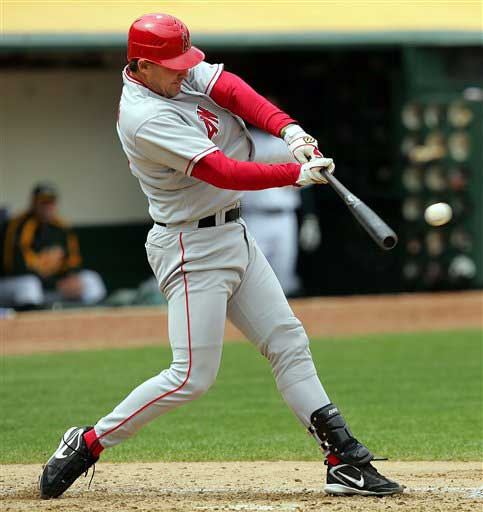
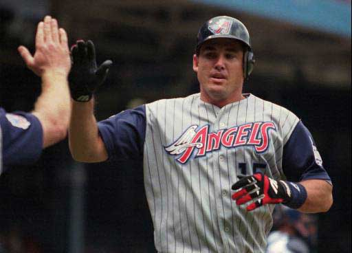
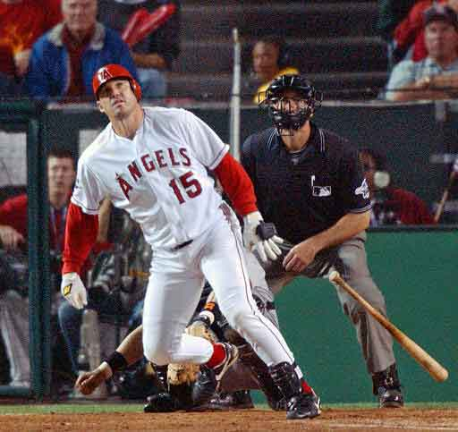
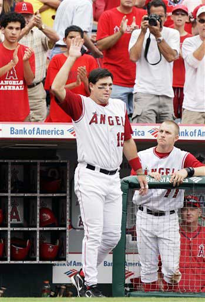
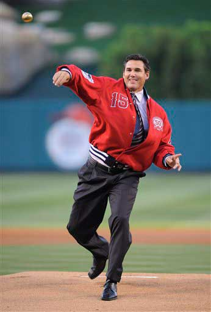

Tim Salmon
Timothy James "Tim" Salmon was born on August 24, 1968. Do wwas drafted in the third round of the 1989 Major Leage Baseball draft. In his rookie year in 1993 Tim salmon hit 31 home runs with .918 ops. he ended up winning the rookie of the year award for his fenominal rookie season. After his proformance in his rookie year he became known as one of the leagues elite power hitting outfeilder.
In 2000 Tim salmon signed a 4 year extension with the angels. His 2001 season was one of his most dissapointig years he finished with career lows in many different categories. He followed that season up with one of his most memorable seasons ever.
2002 was a comback year for not only Tim Salmon but the Angels franchise. After a great regular season that earned him the AL Comeback Player of the Year Award, He was a crucial part of the Angels 2002 word series team. He hit to key home runs in game two of the world series against the San Francisco Giants. He also had a .346 batting average during the season.
He followed his 2002 season with another outstanding season in 2003. After that Tim only played in 60 games in the 2004 season and was sidelined his whole 2005 season to recover from left knee and right rotator cuff surgery. His return looked very unlikely to return. He decided not to end his carrer there and focused all his energy on becoming healthy for the 2006 seasom to play one last season. In 2005 angels signed Tim Salmon to a minor league contract making him a non roster invitee to the 2006 spring training and thats all he needed. 2006 was a major improvement over his 2004 season he played as a designated hitter he finished with a .811 ops over 76 games. The season also helped him pass 1000 Carrer RBI and raised his carrer home runs to 299. He ended up playing all 14 years of his career with the angels
